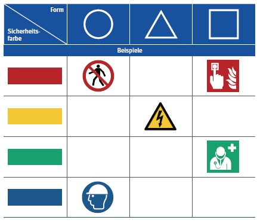

Sicherheitszeichen sind bestimmt durch ihre geometrische Form, die
Sicherheitsfarbe und das graphische Symbol. Die Systematik der
Sicherheitszeichen ist dabei
so aufgebaut, dass den Kombinationen von geometrischer Form und
Sicherheitsfarbe bestimmte Zeichenarten (z. B. Verbot oder Warnung)
zugeordnet sind.
Diese sind:
| Zeichenart | geometrische Form | Sicherheitsfarbe |
|---|---|---|
| Verbotszeichen | rund | rot |
| Warnzeichen | dreieckig | gelb |
| Rettungszeichen | quadratisch | grün |
| Brandschutzzeichen | quadratisch | rot |
| Gebotszeichen | rund | blau |
Dabei sind die Farbbereiche wie folgt definiert:
| Sicherheitsfarbe | Bezeichnung nach DIN 5381 | Bezeichnung nach RAL 840-HR (seidenmatt), RAL 841-GL (glänzend) (bisher RAL-F 14) |
|---|---|---|
| Rot | Kennfarbe DIN 5381 – Rot | RAL 3001 Signalrot |
| Gelb | Kennfarbe DIN 5381 – Gelb | RAL 1003 Signalgelb |
| Grün | Kennfarbe DIN 5381 – Grün | RAL 6032 Signalgrün |
| Blau | Kennfarbe DIN 5381 – Blau | RAL 5005 Signalblau |
| Weiß | Kennfarbe DIN 5381 – Weiß | RAL 9003 Signalweiß |
| Schwarz | Kennfarbe DIN 5381 – Schwarz | RAL 9004 Signalschwarz |
Auch in betrieblichen Dokumenten wie beispielsweise Betriebsanweisungen sind Sicherheitszeichen in den vorgeschriebenen Farben zu verwenden.
Beispiele für die Zuordnung von Farbe und Form unterschiedlicher Sicherheitszeichen zeigt die folgende Tabelle:

Die Sicherheitsaussage eines Sicherheitszeichens kann durch ein Zusatzzeichen konkretisiert werden. Zusatzzeichen sind rechteckige, mit einem Symbol oder/und Text versehene Zeichen. Sie können weiß oder in der Farbe des Sicherheitszeichens sein. Sie können auf einem eigenen Träger unterhalb oder neben dem Sicherheitszeichen oder zusammen mit dem Sicherheitszeichen auf einem gemeinsamen Träger (Kombinationszeichen) angebracht werden.
Die entsprechend der gesetzlichen Grundlagen und Normen zur Sicherheits- und Gesundheitsschutzkennzeichnung gestalteten Sicherheitszeichen dürfen nur für Hinweise im Zusammenhang mit Sicherheit und Gesundheitsschutz und nicht zu anderen Zwecken, wie z. B. dem Schutz von technischen Bauteilen oder maschinellen Einrichtungen, verwendet werden.